Nueva vida
Transformamos piezas olvidadas en objetos únicos

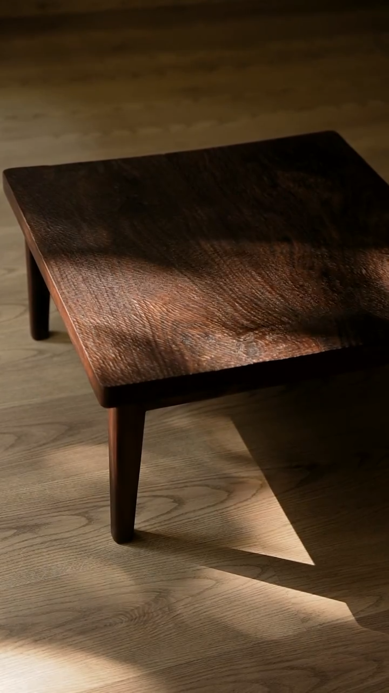
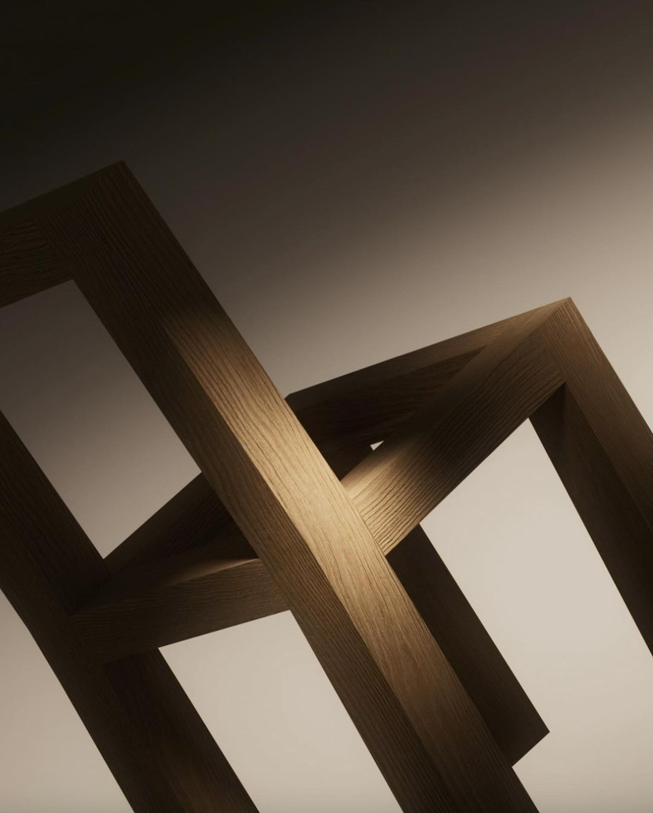
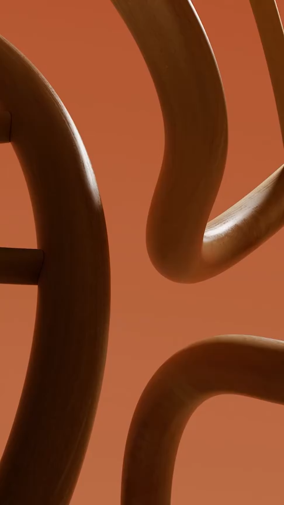
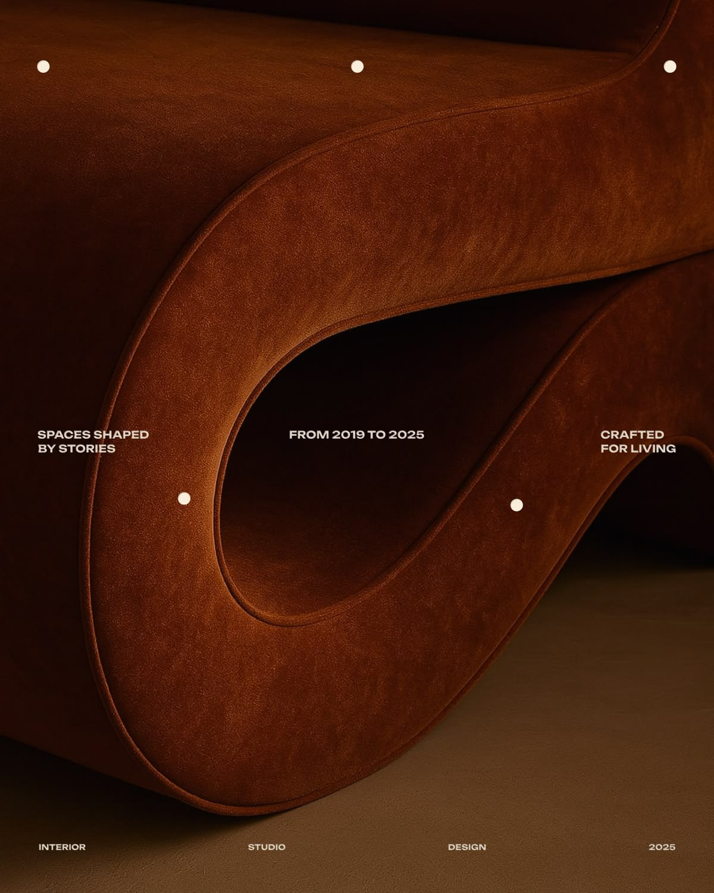
Transformamos muebles con historia en piezas contemporáneas, fusionando técnicas artesanales con una visión fresca del diseño.
Transformamos piezas olvidadas en objetos únicos
Conservamos la esencia y la historia de cada mueble
Incorporamos acabados modernos sin perder identidad.
Reutilizamos materiales para crear con conciencia
Servicio de restauración integral
El proceso parte del diagnóstico técnico, sigue con la reparación estructural y termina con una propuesta estética pensada para el uso real de la pieza.
Enviar consulta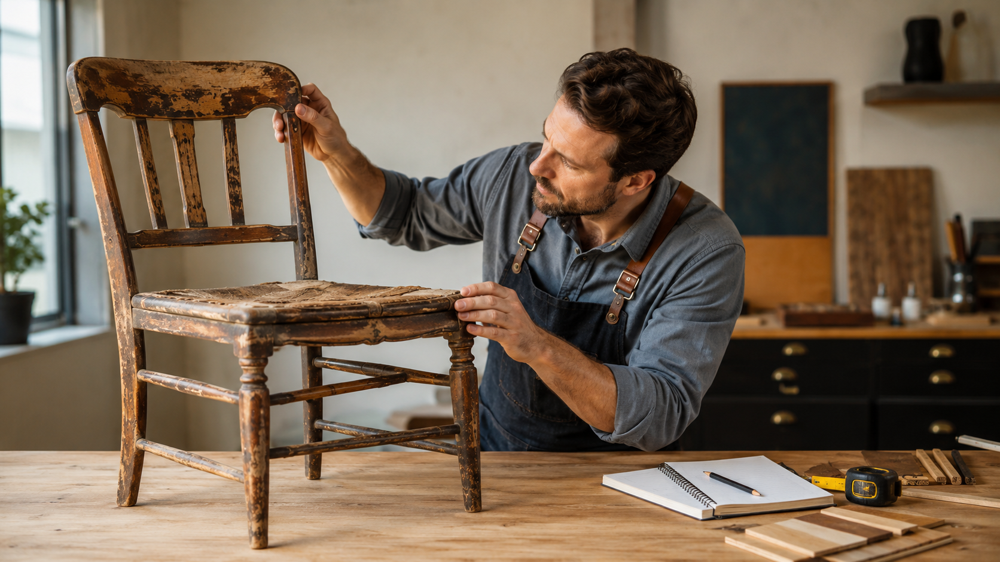
Academia de formación
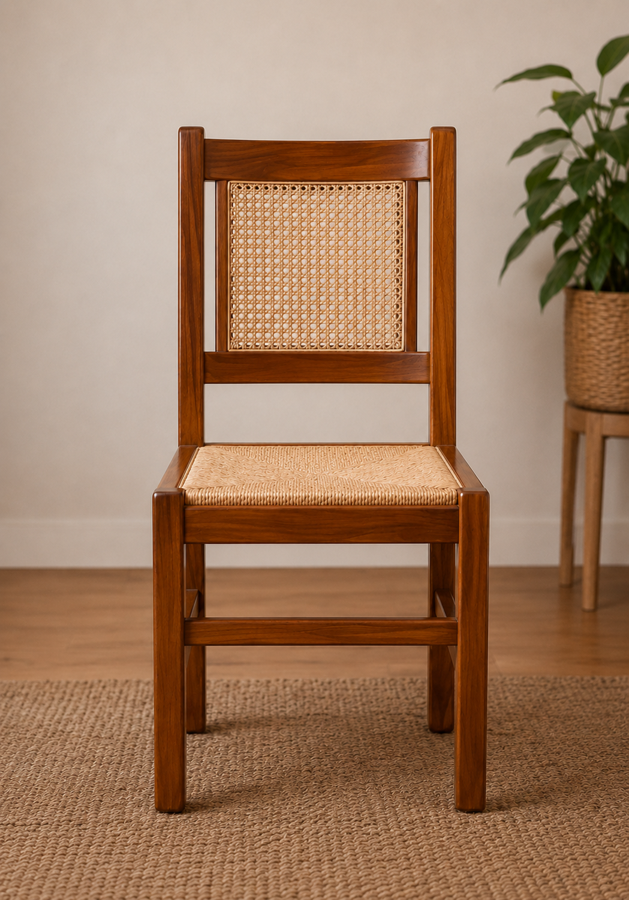
 Antes
Después
Antes
Después
Trae tu mueble desgastado, viejo o roto que nosotros nos ocupamos de revivirlo y darle el toque.
Me interesaCaso destacado
/01De una pieza con historia y desgaste, a un mueble renovado que vuelve a ser parte de tu hogar.
Saber más
Próximamente
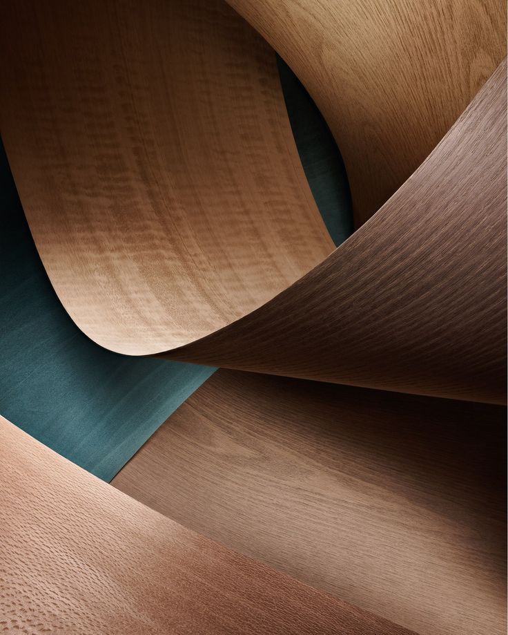
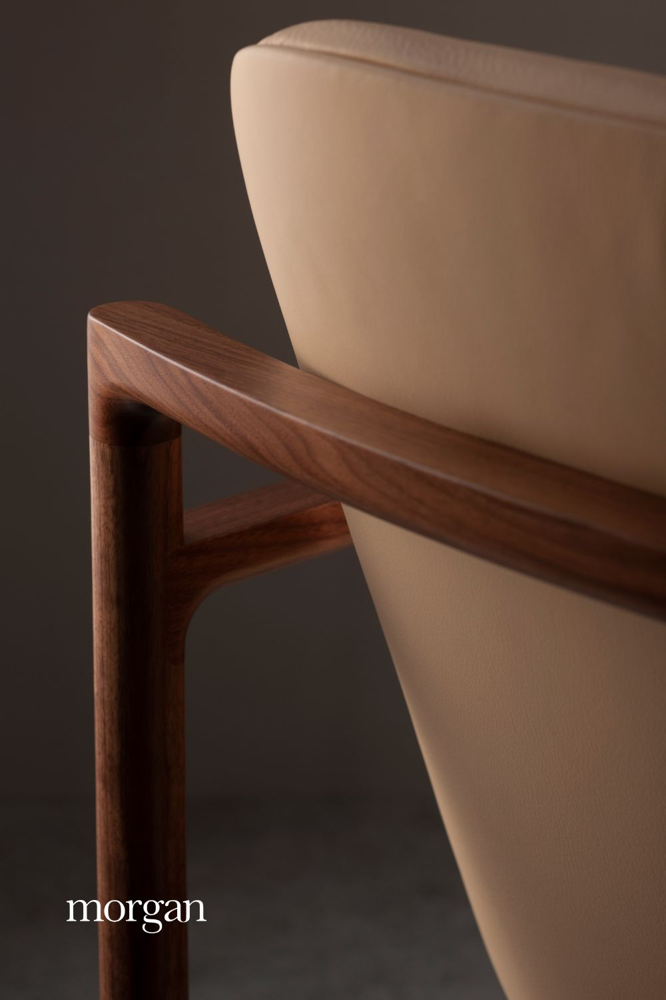


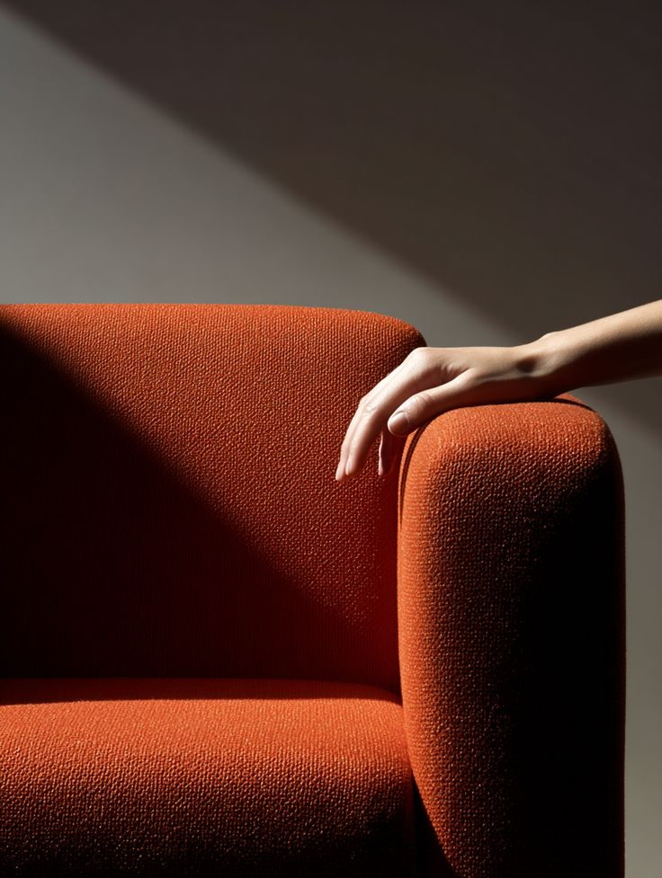
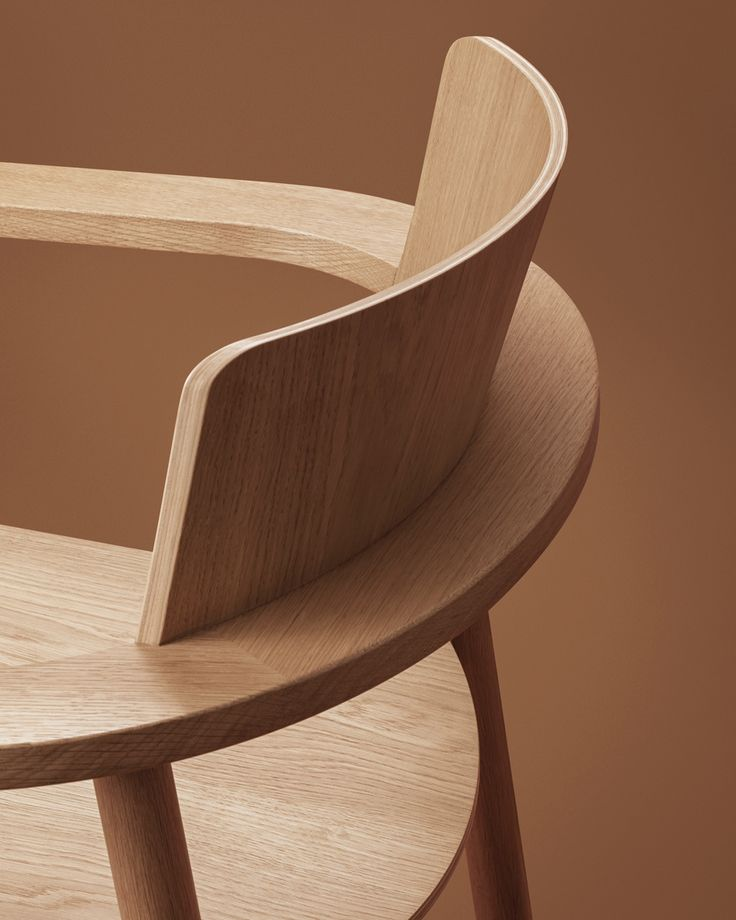


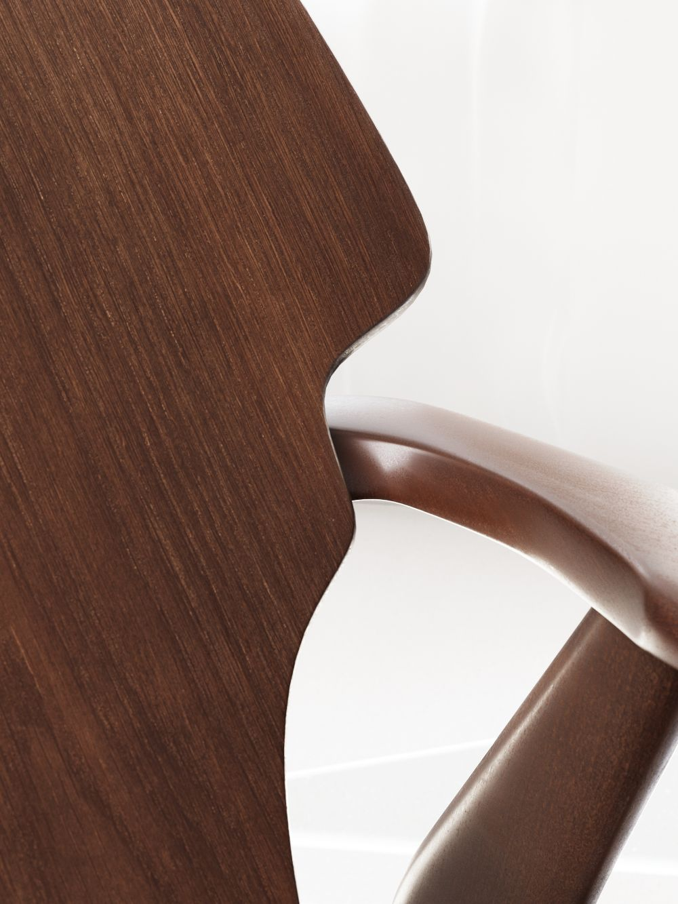

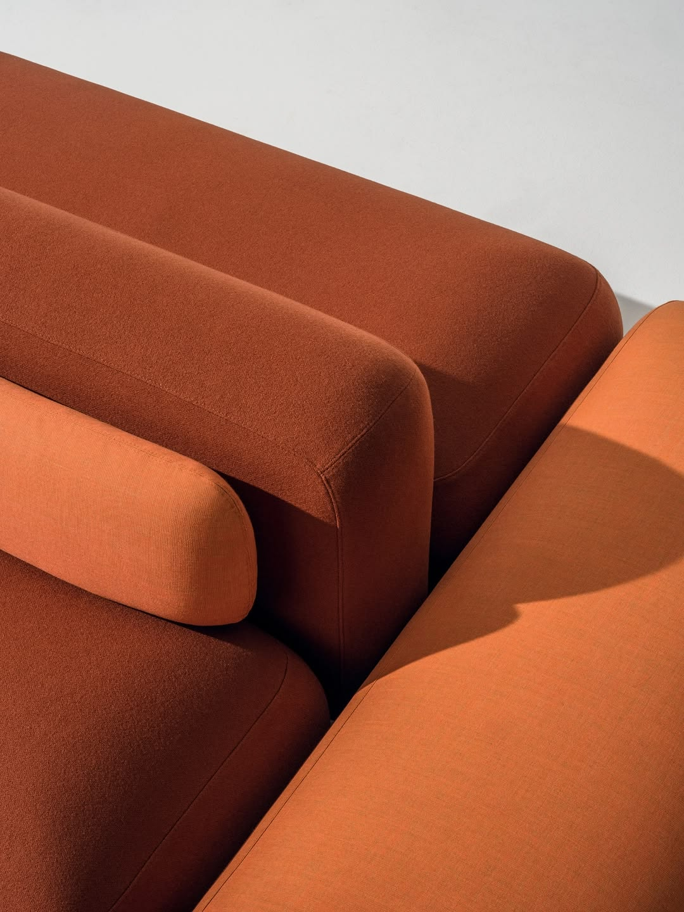
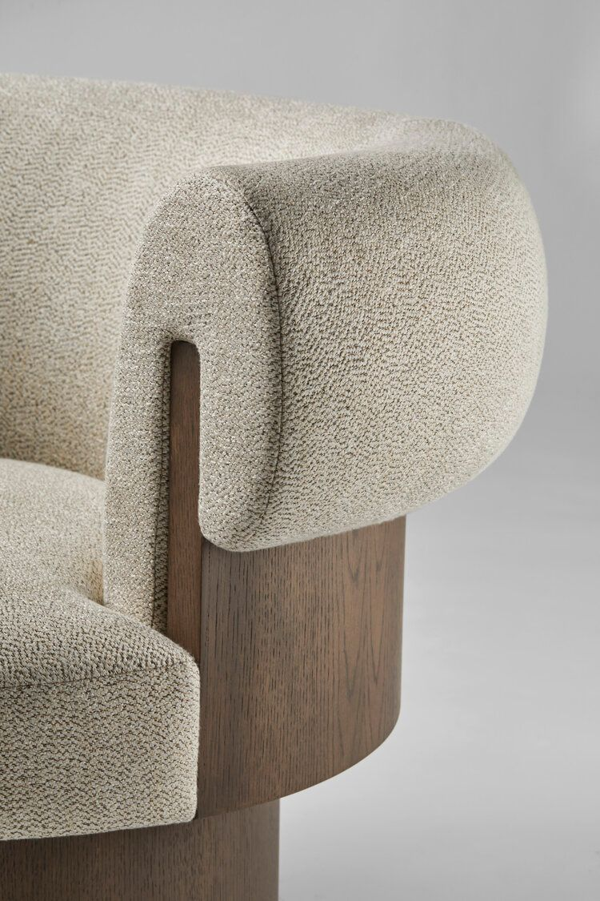

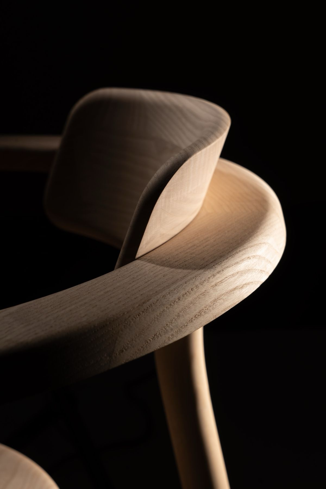
Contanos tu idea, compartí fotos de tu mueble o consultanos sobre nuestros cursos. Estamos para ayudarte.